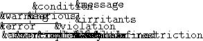

Scheme allows programs to deal with exceptional situations using two cooperating facilities: The exception system for raising and handling exceptional situations, and the condition system for describing these situations.
The exception system allows the program, when it detects an exceptional situation, to pass control to an exception handler, and to dynamically establish such exception handlers. Exception handlers are always invoked with an object describing the exceptional situation. Scheme’s condition system provides a standardized taxonomy of such descriptive objects, as well as a facility for extending the taxonomy.
This section describes Scheme’s exception-handling and exception-raising constructs provided by the (rnrs exceptions (6))library.
Exception handlers are one-argument procedures that determine the action the program takes when an exceptional situation is signalled. The system implicitly maintains a current exception handler.
The program raises an exception by invoking the current exception handler, passing it an object encapsulating information about the exception. Any procedure accepting one argument may serve as an exception handler and any object may be used to represent an exception.
The system maintains the current exception handler as part of the dynamic environment of the program; see report section on “Dynamic extent and dynamic environment”.
When a program begins its execution, the current exception handler is expected to handle all &serious conditions by interrupting execution, reporting that an exception has been raised, and displaying information about the condition object that was provided. The handler may then exit, or may provide a choice of other options. Moreover, the exception handler is expected to return when passed any other non-&serious condition. Interpretation of these expectations necessarily depends upon the nature of the system in which programs are executed, but the intent is that users perceive the raising of an exception as a controlled escape from the situation that raised the exception, not as a crash.
Handler must be a procedure and should accept one argument. Thunk must be a procedure that accepts zero arguments. The with-exception-handler procedure returns the results of invoking thunk. Handler is installed as the current exception handler for the dynamic extent (as determined by dynamic-wind) of the invocation of thunk.
Implementation responsibilities: The implementation must check the restrictions on handler to the extent performed by applying it as described when it is called as a result of a call to raise or raise-continuable. An implementation may check whether handler is an appropriate argument before applying it.
Syntax: Each <cond clause> is as in the specification of cond. (See report section on “Derived conditionals”.) >^ and else are the same as in the (rnrs base (6)) library.
Semantics: Evaluating a guard form evaluates <body> with an exception handler that binds the raised object to <variable> and within the scope of that binding evaluates the clauses as if they were the clauses of a cond expression. That implicit cond expression is evaluated with the continuation and dynamic environment of the guard expression. If every <cond clause>’s <test> evaluates to #f and there is no else clause, then raise is re-invoked on the raised object within the dynamic environment of the original call to raise except that the current exception handler is that of the guard expression.
The final expression in a <cond> clause is in a tail context if the guard expression itself is.
Raises a non-continuable exception by invoking the current exception handler on obj. The handler is called with a continuation whose dynamic environment is that of the call to raise, except that the current exception handler is the one that was in place when the handler being called was installed. When the handler returns, a non-continuable exception with condition type &non-continuable is raised in the same dynamic environment as the handler.
Raises a continuable exception by invoking the current exception handler on obj. The handler is called with a continuation that is equivalent to the continuation of the call to raise-continuable, with these two exceptions: (1) the current exception handler is the one that was in place when the handler being called was installed, and (2) if the handler being called returns, then it will again become the current exception handler. If the handler returns, the values it returns become the values returned by the call to raise-continuable.
(guard (con
The section describes Scheme’s (rnrs conditions (6))library for creating and inspecting condition types and values. A condition value encapsulates information about an exceptional situation. Scheme also defines a number of basic condition types.
Scheme conditions provides two mechanisms to enable communication about an exceptional situation: subtyping among condition types allows handling code to determine the general nature of an exception even though it does not anticipate its exact nature, and compound conditions allow an exceptional situation to be described in multiple ways.
Conceptually, there are two different kinds of condition objects: simple conditionsand compound conditions. An object that is either a simple condition or a compound condition is simply a condition. Compound conditions form a type disjoint from the base types described in report section on “Base types”. A simple condition describes a single aspect of an exceptional situation. A compound condition represents multiple aspects of an exceptional situation as a list of simple conditions, its components. Most of the operations described in this section treat a simple condition identically to a compound condition with itself as its own sole component. For a subtype t of &condition, a condition of type t is either a record of type t or a compound condition containing a component of type t.
Simple conditions are records of subtypes of the &condition record type. The &condition type has no fields and is neither sealed nor opaque.
The condition procedure returns a condition object with the components of the conditions as its components, in the same order, i.e., with the components of condition1 appearing first in the same order as in condition1, then with the components of condition2, and so on. The returned condition is compound if the total number of components is zero or greater than one. Otherwise, it may be compound or simple.
The simple-conditions procedure returns a list of the components of condition, in the same order as they appeared in the construction of condition. The returned list is immutable. If the returned list is modified, the effect on condition is unspecified.
Note: Because condition decomposes its arguments into simple conditions, simple-conditions always returns a “flattened” list of simple conditions.
Returns #t if obj is a (simple or compound) condition, otherwise returns #f.
Rtd must be a record-type descriptor of a subtype of &condition. The condition-predicate procedure returns a procedure that takes one argument. This procedure returns #t if its argument is a condition of the condition type represented by rtd, i.e., if it is either a simple condition of that record type (or one of its subtypes) or a compound conditition with such a simple condition as one of its components, and #f otherwise.
Rtd must be a record-type descriptor of a subtype of &condition. Proc should accept one argument, a record of the record type of rtd. The condition-accessor procedure returns a procedure that accepts a single argument, which must be a condition of the type represented by rtd. This procedure extracts the first component of the condition of the type represented by rtd, and returns the result of applying proc to that component.
(define-record-type (&cond1 make-cond1 real-cond1?)
Syntax: <Condition-type>, <supertypes>, <constructor>, and <predicate> must all be identifiers. Each <field-spec> must be of the form
(<field> <accessor>)where both <field> and <accessor> must be identifiers.
Semantics: The define-condition-type form expands into a record-type definition for a record type <condition-type> (see section 6.2). The record type will be non-opaque, non-sealed, and its fields will be immutable. It will have <supertype> has its parent type. The remaining identifiers will be bound as follows:
<Constructor> is bound to a default constructor for the type (see section 6.3): It accepts one argument for each of the record type’s complete set of fields (including parent types, with the fields of the parent coming before those of the extension in the arguments) and returns a condition object initialized to those arguments.
<Predicate> is bound to a predicate that identifies conditions of type <condition-type> or any of its subtypes.
Each <accessor> is bound to a procedure that extracts the corresponding field from a condition of type <condition-type>.
(define-condition-type &c &condition
(define v1 (make-c1 "V1" "a1"))
(define v2 (make-c2 "V2" "b2"))
(define v3 (condition
(define v4 (condition v1 v2))
(define v5 (condition v2 v3))
|  |
| Figure 1: Hierarchy of standard condition types |
This condition type could be defined by
(define-condition-type &message &conditionIt carries a message further describing the nature of the condition to humans.
This condition type could be defined by
(define-condition-type &warning &conditionThis type describes conditions that do not, in principle, prohibit immediate continued execution of the program, but may interfere with the program’s execution later.
This condition type could be defined by
(define-condition-type &serious &conditionThis type describes conditions serious enough that they cannot safely be ignored. This condition type is primarily intended as a supertype of other condition types.
This condition type could be defined by
(define-condition-type &error &seriousThis type describes errors, typically caused by something that has gone wrong in the interaction of the program with the external world or the user.
This condition type could be defined by
(define-condition-type &violation &seriousThis type describes violations of the language standard or a library standard, typically caused by a programming error.
This condition type could be defined by
(define-condition-type &assertion &violationThis type describes an invalid call to a procedure, either passing an invalid number of arguments, or passing an argument of the wrong type.
This condition type could be defined by
(define-condition-type &irritants &conditionIrritants should be a list of objects. This condition provides additional information about a condition, typically the argument list of a procedure that detected an exception. Conditions of this type are created by the error and assertion-violation procedures of report section on “Errors and violations”.
This condition type could be defined by
(define-condition-type &who &conditionWho should be a symbol or string identifying the entity reporting the exception. Conditions of this type are created by the error and assertion-violation procedures (report section on “Errors and violations”), and the syntax-violation procedure (section on “Syntax violations”).
This condition type could be defined by
(define-condition-type &non-continuable &violationThis type indicates that an exception handler invoked via raise has returned.
This condition type could be defined by
(define-condition-type &implementation-restrictionThis type describes a violation of an implementation restriction allowed by the specification, such as the absence of representations for NaNs and infinities. (See section 11.3.)
This condition type could be defined by
(define-condition-type &lexical &violationThis type describes syntax violations at the level of the datum syntax.
This condition type could be defined by
(define-condition-type &syntax &violationThis type describes syntax violations. Form should be the erroneous syntax object or a datum representing the code of the erroneous form. Subform should be an optional syntax object or datum within the erroneous form that more precisely locates the violation. It can be #f to indicate the absence of more precise information.
This condition type could be defined by
(define-condition-type &undefined &violationThis type describes unbound identifiers in the program.